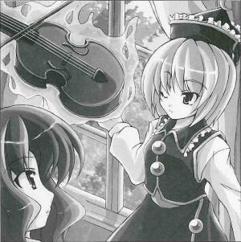

Sudden Location Change at Poltergeists' Concert
No Confusion During the Shift in Venue, But Why Move?I learned that on Xth the X, the poltergeists who were performing at Hakugyokurou suddenly announced a change of venues in the middle of their performance, moving the entire audience in front of the Scarlet Devil Mansion.
Although there were no major disturbances as the concert continued after the move, even the audience members were tilting their heads about this migration from the Netherworld to the world of the living, wondering, Why?
In the end, no explanation was given after the concert was over, and the audience was too excited to bother bringing up the question.
The ones behind such a clamorous concert were the Prismriver Sisters (Poltergeists).
The eldest sister and the leader of the ensemble, Lunasa Prismriver, had this to say about the move.
The air pressure had decreased.
At that time in Hakugyokurou, the air pressure was decreasing....
If that continued, it was definitely going to rain.
So I ordered my sisters to move.
She also said that she didn't even tell her sisters, Merlin Prismriver and Lyrica Prismriver, the reason why they were moving.
The rain would fall if I told them or not.
And the audience still followed us without complaints even without knowing the reason.
The audience loves the surprise of not knowing what's going to happen.
If they knew the reason, then the move wouldn't be a surprise, it'd be an evacuation. They would surely object.
Just as she thought, nobody in the audience said anything. If anything, they seemed to enjoy this unexpected occurrence.
It's often said that an artist is solely insistent about the performance, and do not concern themselves with putting on a good show, they will never become first-class.
A concert should be made to entertain the audience.
It is not enough to say that Good songs will make people happy.
It is more like: A good concert makes your own songs sound even better.
However, I couldn't find out why she was the only one who sensed that it was going to rain soon.
Judging by the fact that only the eldest sister sensed it, I don't think that it is a unique trait of poltergeists.
Aya 
That was a fine performance at the concert. I enjoyed it as much as the other ones.
Lunasa
It was no trouble at all. Even though we have instruments, we don't sing.
Aya
I see. The concert was fun. And it didn't rain today either.
Lunasa
What does rain have to do with the concert?
Aya
Here, in this article about the concert, you were the only one who seemed to know it was going to rain in this article.
Lunasa
Yes, I knew that right away.
Aya
How did know that?
Lunasa
When the air pressure decreased, the tension did as well.
Aya
I had no idea your intuition was so sharp...
Lunasa
Intuition? There seems to be some misunderstanding. I meant the tension in my violin's bowstring. If it slackens, then the pitch decreases. The reverberations change, too. That's how I figured it out so soon.
Aya
Ah, so that's it. I certainly thought you seemed less tense.
Lunasa
The instrument was detuning so my tension was also decreasing.
Aya
Ah, I see. But one question has been on my mind for a while. I said your group was a band, but I don't really know if I can call it that. How do you do it with only three people playing violin, trumpet, and keyboard?
Lunasa
How long has that been bothering you? You've obviously seen us perform.
Aya
I'm not finished yet. Doesn't this seem like a strange combination of instruments?
Lunasa
How?
Aya
I'm saying that I could never imagine what kind of songs that makeup of instruments could perform, that it's difficult to think of a way to make them work with each other. A normal band doesn't even have a violin to begin with, right?
Lunasa
So what do you mean?
Aya
Nothing else needs to be said.
Lunasa
You don't know the first thing about music. The essence of music is about producing sounds. It's never about copying them. The sheet music is superfluous. Making the sounds itself is the most important point. If sounds removed from nature are noise, there is no difference between excellent music and noise.
Aya
It's noise, huh? I certainly agree your group is noisy.
Lunasa
Something that can make sound, whatever they may be, can produce noise. The performers make the music, the instruments are simply decorations.
Aya
So, you're saying that you play the violin as a result of just playing whichever instrument you like?
Lunasa
No, it's just because the violin is my forte.
Aya
But didn't you just say that instruments are simply decorations?
Lunasa
If it weren't my forte, I wouldn't be able to play the sounds I wanted, would I? If I can't play it freely, I can't make noise.
Aya
I heard this can be a little hard to say, but to make a long story short, your concerts are cacophonous.
Lunasa
I am very grateful for your compliment.
Profile:
Lunasa Prismriver
She performs in an ensemble of poltergeists. Has two younger sisters, Merlin and then Lyrica.
Skilled with stringed instruments, especially the violin.
Appearances:
Perfect Cherry Blossom, Phantasmagoria of Flower View